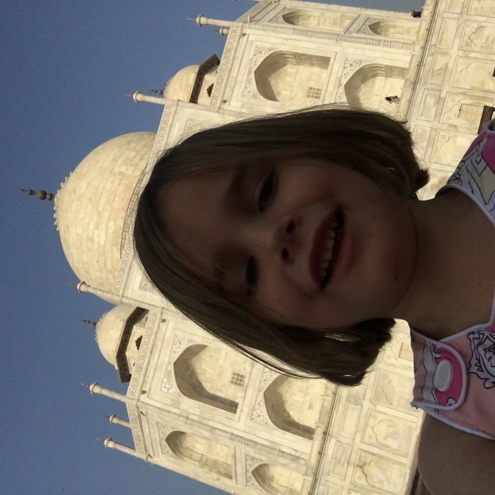
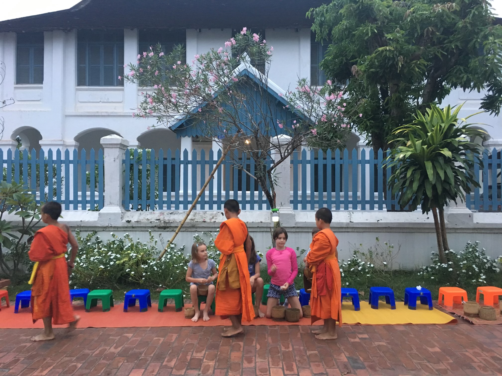

Intrests

Hi! My name is Grace, today I will be telling you all about my intests
My Interests
- Family:
- Travel:
- Women in sports:
- Tubing:
Family
One of the things I am most thankful for is my loving family, they supoort me with whatever I do and push me to be my best. Everynight we have family dinners where we dissucs out day, crack jokes, and talk about current events. I am very close to them and there opion means evrything to me. I am so thankful for my family.
Traveling
I love to see new cultures
Why
Traveling is my passion because it allows me to immerse myself in different cultures and experience life like a local. I love wandering through hidden streets, tasting authentic cuisine, and embracing the traditions that make each place unique. For me, travel isn’t just about sightseeing—it’s about connecting with people, understanding their way of life, and creating unforgettable memories along the way.
Where
One of my favorite places I’ve ever traveled to is Laos. I loved spending time with the local kids, playing games, and teaching them English—it was such a heartwarming and rewarding experience. The people were incredibly kind, and the food was amazing, with rich flavors and fresh ingredients that made every meal unforgettable. Laos holds a special place in my heart, not just for its beauty but for the connections I made and the culture I got to be a part of.
Thanks for getting to know me! I can’t wait to see where life takes me.
